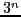
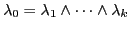
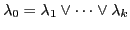
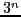
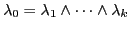
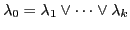

Prior to searching, Boolean functions become implemented as acyclic Mealy machines, called SMURFs (for ``State Machine Used to Represent Functions''). SMURFs help lower the overhead of searching and make complex search heuristics feasible: all important data needed for the search process and able to be computed prior to search is memoized in SMURF states and transitions for immediate access during search. The inputs to a SMURF are literals that are assumed or inferred, during search, to be true; the outputs are sets of literals that are forced to be true (analogous to unit resolution in CNF) by the newly assigned inputs; and the states correspond to what ``portion'', or residual, of the constraint remains to be satisfied11. SMURFs are described in Figure 30. For a set of constraint BDDs, we compute the SMURFs for each of the separate BDDs and merge states with equal residual functions, maintaining one pointer into the resultant automaton for the current state of each constraint.
| 0.4Fig/smurf.eps |
The SMURF structure described in the figure, for a Boolean
function with  variables, can have, in the worst case, close to
 states. Thus, an Achilles' heel of SBSAT can be handling long
input functions. In most benchmarks, that has not been a serious
practical problem because all individual constraint are reasonably
short except12 for a small special group of
functions: long clauses, long exclusive disjunctions, and
``assignments''
 and
 (where the
variables, can have, in the worst case, close to
 states. Thus, an Achilles' heel of SBSAT can be handling long
input functions. In most benchmarks, that has not been a serious
practical problem because all individual constraint are reasonably
short except12 for a small special group of
functions: long clauses, long exclusive disjunctions, and
``assignments''
 and
 (where the  's
are literals). To solve the space problem for these special
functions, we create special data structures; these take little space
and can simulate the SMURFs for the functions exactly with
little time loss. For a long clause we store only (i) whether the
clause is already satisfied, and (ii) how many literals are currently
not assigned truth values. Storing exclusive disjuncts is similar.
For the assignments, we store both the value (0,1, or
unassigned) of the left-hand-side literal and the number of
right-hand-side literals with undefined truth values.
's
are literals). To solve the space problem for these special
functions, we create special data structures; these take little space
and can simulate the SMURFs for the functions exactly with
little time loss. For a long clause we store only (i) whether the
clause is already satisfied, and (ii) how many literals are currently
not assigned truth values. Storing exclusive disjuncts is similar.
For the assignments, we store both the value (0,1, or
unassigned) of the left-hand-side literal and the number of
right-hand-side literals with undefined truth values.